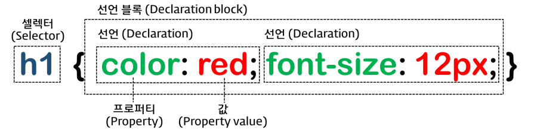
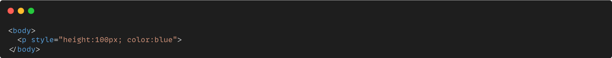
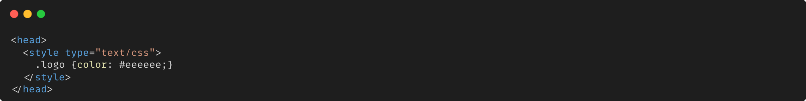
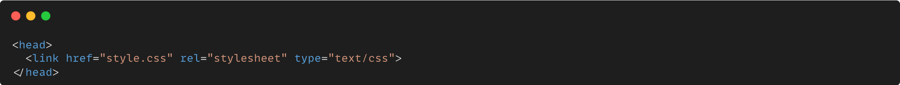
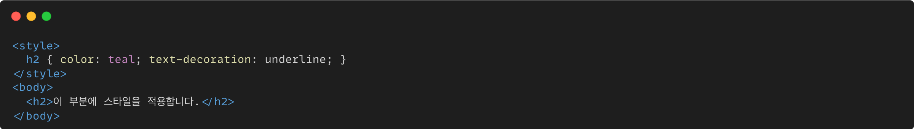
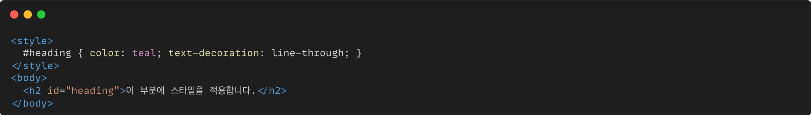
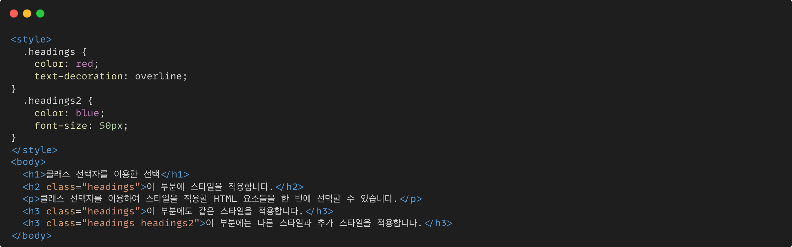
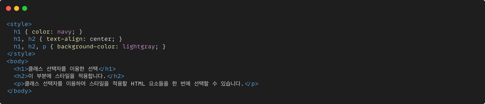
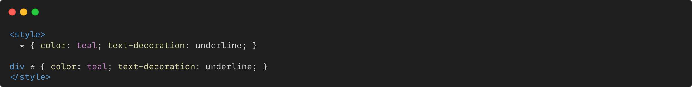
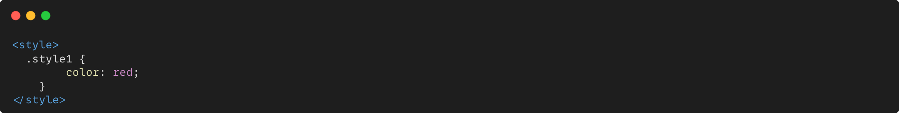

CSS는 "Cascading Style Sheet"의 약자로 HTML이나 XML과 같은 마크업 언어로 작성된 문서의 스타일을 꾸미고 표현하기 위한 스타일 시트 언어입니다. CSS는 웹 페이지의 레이아웃, 색상, 글꼴, 간격 등을 지정하여 웹 페이지의 시각적인 모양을 제어하는 데 사용됩니다.
CSS의 기초 문법

CSS의 문법은 선택자(selector)와 선언부(declaratives)로 구성됩니다.
① 선택자 - CSS를 적용하고자 하는 HTML 요소(element)
② 선언부 - 하나 이상의 선언들을 세미콜론(;)으로 구분하여 포함할 수 있으며, 중괄호({ })를 사용하여 전체를 둘러쌉니다.
각 선언은 CSS 속성명(property)과 속성값(value)을 가지며, 그 둘은 콜론(:)으로 연결됩니다.
이러한 CSS 선언(declaration)은 언제나 마지막에 세미콜론(;)으로 끝마칩니다.
CSS 선언 방식
CSS를 HTML에 적용시키기 위한 방법은 인라인(in-line)방식, 내장(embedded) 방식, 링크(link) 방식, @import 방식으로 크게 네가지가 있습니다. 아래에서 이 네가지 방법들의 CSS 선언 방식을 예시와 함께 알아봅시다.
인라인(in-line)방식

HTML 요소(태그)의 style 속성에 직접 작성하는 방식
내장(embedded) 방식

HTML <style></style> 안에 작성하는 방식
링크(link) 방식

HTML <link>를 이용하여 외부 문서로 CSS를 불러와 적용하는 방식
@import 방식
CSS @import를 이용하여 외부 문서로 CSS를 불러와 적용하는 방식
CSS 선택자
CSS를 HTML에 적용시키기 위한 방법을 알아봤습니다. 다음으로 선택자에 대해서 알아보겠습니다. 선택자란 말 그대로 선택을 해주는 요소입니다. 이를 통해 특정 요소들을 선택하여 스타일을 적용할 수 있게 됩니다. CSS에서 스타일이 어떤 방식으로 적용 되는지 몇가지 예시를 들어 알아봅시다.
HTML 요소 선택자

CSS를 적용할 대상으로 HTML 요소의 이름을 직접 사용하여 선택할 수 있습니다.
아이디(id) 선택자

아이디 선택자는 CSS를 적용할 대상으로 특정 요소를 선택할 때 사용합니다. 이때 #을 써서 구분해 줍니다.
또한 HTML과 CSS에서는 하나의 웹 페이지에 속하는 여러 요소에 같은 아이디 이름을 사용해도 별 문제없이 동작합니다.
하지만 이렇게 중복된 아이디를 가지고 자바스크립트 작업을 하게 되면 오류가 발생합니다. 따라서 되도록이면
하나의 웹 페이지에 속하는 요소에는 다른 아이디 이름을 사용하거나 클래스를 사용하는 것이 좋습니다.
클래스(class) 선택자

클래스 선택자는 특정 집단의 여러 요소를 한 번에 선택할 때 사용합니다. 이러한 특정 집단을 클래스(class)라고 하며, 같은 클래스 이름을 가지는 요소들을 모두 선택해 줍니다.
그룹(group) 선택자

그룹 선택자는 위에서 언급한 여러 선택자를 같이 사용하고자 할 때 사용합니다. 그룹 선택자는 여러 선택자를 쉼표(,)로 구분하여 연결합니다. 이러한 그룹 선택자는 코드를 중복해서 작성하지 않도록 하여 코드를 간결하게 만들어 줍니다.
전체 선택자

전체 선택자는 * 문자를 사용하며 요소 내부의 모든 요소를 선택합니다.
마지막으로 스타일 적용 우선순위는 아래와 같습니다.
인라인 선언 방식
아이디 선택자
클래스 선택자
태그 선택자
전체 선택자
오른쪽의 버튼을 눌러보세요. 텍스트의 색상이 바뀝니다.
왜 버튼을 누르면 텍스트에 색깔이 바뀔까요? 그 이유는 각 버튼별로 불러오는 CSS를 다르게 설정했기 때문입니다. 예시로 'RED'버튼의 CSS 스타일을 살펴보겠습니다.

'RED' CSS 스타일은 클래스(class) 선택자를 이용하여 CSS 스타일을 불러옵니다. 그리고 color: red;를 사용하여 텍스트의 색상을 빨간색으로 적용합니다.
이처럼 CSS는 폰트, 색깔, 구조 등 다양한 구성을 적용시켜 웹사이트의 시각적인 부분을 꾸미는 역할을 합니다. 다양한 CSS 스타일을 활용하여 당신의 웹사이트를 꾸며보세요!